第1章 系统介绍
1.1 系统登录
访问地址：http://IP:端口/项目名称，如http://127.0.0.1/ap
默认管理员账号：admin
初始密码：123456
1.2 页面布局
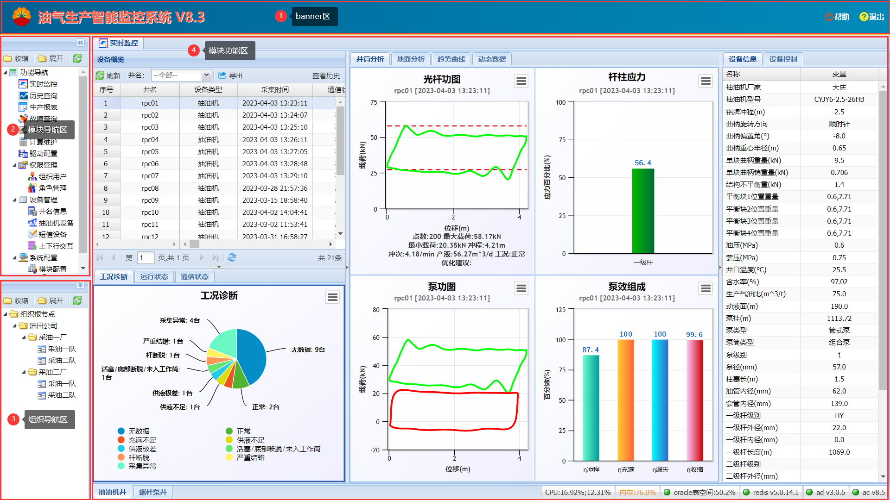
1.3 页面操作
1、拖拽窗口或者点击界面中缝位置的图标 或
或 可实现界面伸缩；
可实现界面伸缩；
2、点击饼图相应部分可对设备进行筛选；
3、用户角色拥有报表编辑权限，才可以修改报表内容；
4、历史曲线和报表曲线，每条曲线的纵坐标最大、最小值可配置。
1.4 OEM配置
配置完成后重启tomcat
打开tomcat安装目录\webapps\ap\WEB-INF\classes\config\config.yml文件，修改oem部分，oem内容修改后，修改静态资源时间戳（首次部署不需要），无需清理浏览器缓存即可生效。
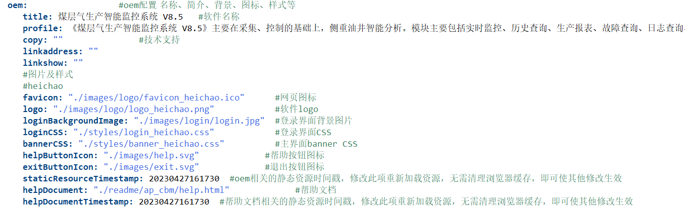
1.5 软件启停
1.5.1 开机自启动
1、root用户修改/etc/rc.d/rc.local文件
su root
vim /etc/rc.d/rc.local
添加以下内容：
#启动oracle监听
su - oracle -lc "/opt/oracle/product/19c/dbhome_1/bin/lsnrctl start"
#启动oracle服务
su - oracle -lc "/opt/oracle/product/19c/dbhome_1/bin/dbstart"
#启动redis
nohup /opt/redis-7.0.9/src/redis-server /opt/redis-7.0.9/redis.conf > /dev/null 2>&1 &
#启动ac
nohup /usr/local/ac -o file > /dev/null 2>&1 &
#启动ad
nohup /usr/local/ad -o file > /dev/null 2>&1 &
#启动tomcat
/opt/apache-tomcat-9.0.73/bin/startup.sh
添加后保存退出
2、rc.local文件授权
chmod +x /etc/rc.d/rc.local
3、oracle额外配置
oracle开机启动，除了以上配置外，还需一些其他设置
1）root用户修改 /etc/oratab文件, 将N改为Y
su root
vim /etc/oratab
将N改成Y
orcl:/data1/opt/oracle/app/oracle/product/19/dbhome_1:N
2）oracle用户修改dbstart及dbshut文件
su - oracle
cd \$ORACLE_HOME/bin
vim dbstart
修改#ORACLE_HOME_LISTNER=\$1为ORACLE_HOME_LISTNER=\$ORACLE_HOME
vim dbshut
修改#ORACLE_HOME_LISTNER=\$1为ORACLE_HOME_LISTNER=\$ORACLE_HOME
1.5.2 手动启停
1、单井计算开发包ac
启动：
nohup /usr/local/ac -o close&
停止：
1）查看进程
ps –e

2）杀掉ac进程
kill -9 26630
2、协议通ad
启动：
nohup /usr/local/ad -o close&
停止：
1）查看进程
ps –e
2）杀掉ad进程
kill -9 22030
3、缓存数据库redis
启动：
nohup /opt/redis-7.0.9/src/redis-server /opt/redis-7.0.9/redis.conf&
停止：
/opt/redis-7.0.9/src/redis-cli shutdown
4、oracle数据库
使用dbstart及dbshut文件启停数据库，需配置以下内容（仅需配置一次即可）：
1）root用户修改 /etc/oratab文件, 将N改为Y
su root
vi /etc/oratab
将N改成Y
orcl:/data1/opt/oracle/app/oracle/product/19/dbhome_1:N
2）oracle用户修改dbstart及dbshut文件
su - oracle
cd \$ORACLE_HOME/bin
vim dbstart
修改#ORACLE_HOME_LISTNER=\$1为ORACLE_HOME_LISTNER=\$ORACLE_HOME
vim dbshut
修改#ORACLE_HOME_LISTNER=\$1为ORACLE_HOME_LISTNER=\$ORACLE_HOME
启动：
1）启动oracle监听
su - oracle -lc "/opt/oracle/product/19c/dbhome_1/bin/lsnrctl start"
2）启动oracle服务
su - oracle -lc "/opt/oracle/product/19c/dbhome_1/bin/dbstart"
停止：
1）停止oracle监听
su - oracle -lc "/opt/oracle/product/19c/dbhome_1/bin/lsnrctl stop"
2）停止oracle服务
su - oracle -lc "/opt/oracle/product/19c/dbhome_1/bin/dbshut "
5、tomcat
启动：
/opt/apache-tomcat-9.0.73/bin/startup.sh
停止：
/opt/apache-tomcat-9.0.73/bin/shutdown.sh
第2章 应用示例
2.1 驱动配置
包括协议配置、单元配置、实例配置。
2.1.1 添加协议
如RTU2.0协议
1、点击添加协议按钮，输入协议名称及排序序号
2、选中协议，录入协议内容
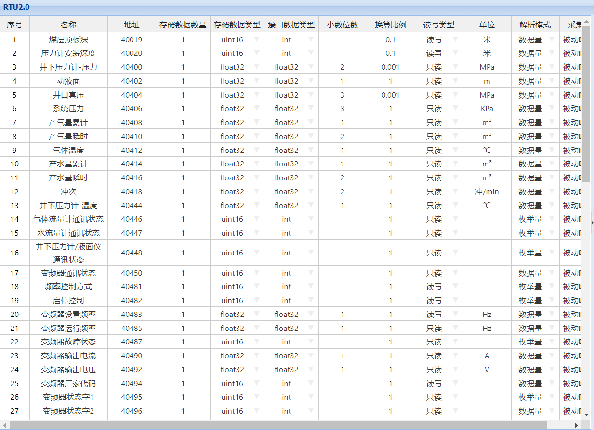
说明：以井口套压为例
下位机部分：起始地址为40404，RTU中存储数据类型为实型，且实型数量为1，读写类型为只读，采集模式为被动响应
上位机部分：接口数据类型为float32且小数位数为3，换算比例为0.001，单位为MPa，解析模式为数据量，如RTU中存储的值为2429，软件平台最终显示值=2429*0.001，且结果保留三位小数，最终显示为2.429MPa。
3、项含义编辑
枚举量：如变频器状态字1值对应的含义配置
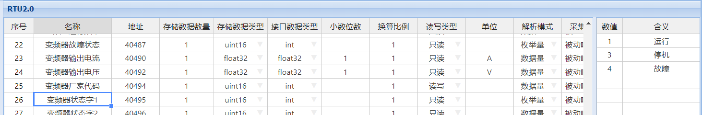
开关量：如保护开关位数组，位所对应的开关状态

数据量：如井口温度，将值-50设置为无效数据N/A
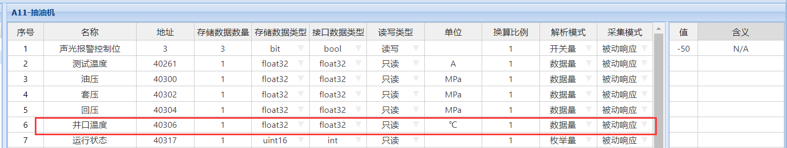
4、关联计算字段及运行状态配置
点击“存储字段表”按钮，查看根据协议自动生成的数据库字段表，相应项的内容存储到数据库表相应的字段中。
关联计算字段配置：特殊含义的字段，需要设置关联计算字段供系统识别。
运行状态配置：选择运行状态字段，并设置运行状态判断条件（数据量）或值（枚举量）。
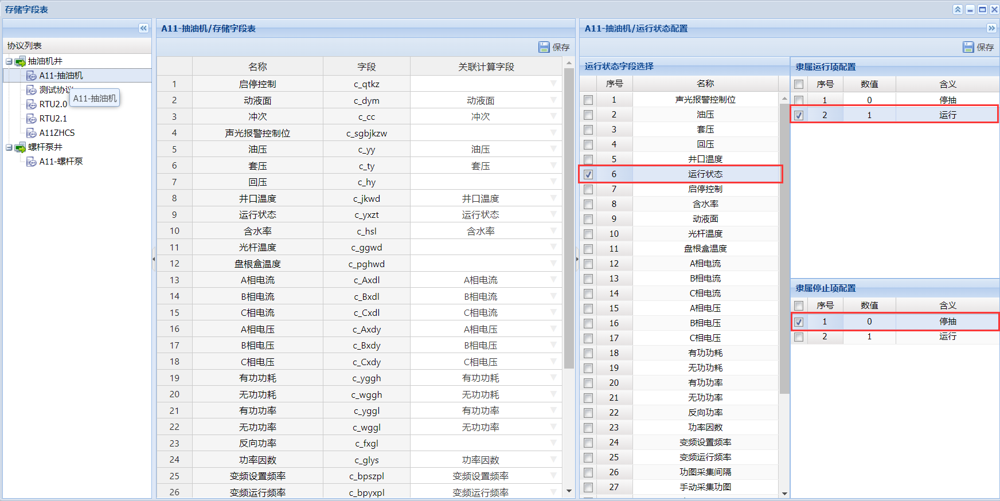
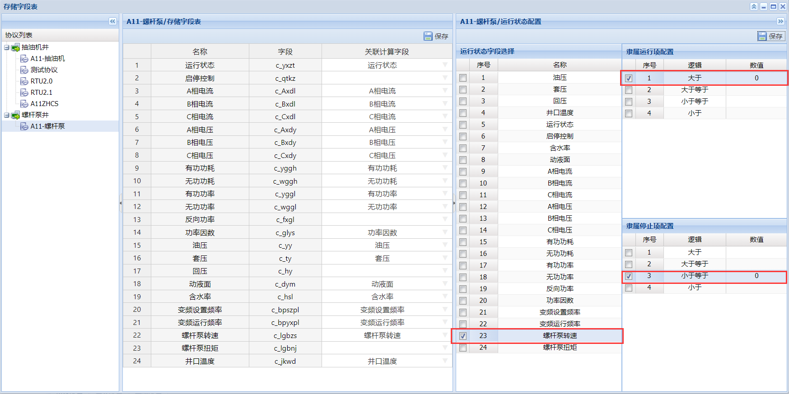
2.1.2 添加采控单元
创建采控单元，并在单元下创建一个采集组和一个控制组，并勾选采集组和控制组包含的项。
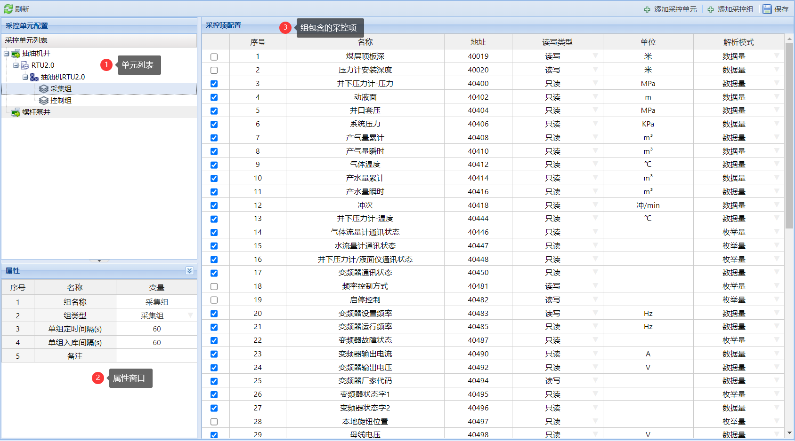
2.1.3 添加显示单元
创建显示单元，并设置单元下包含的项及曲线。
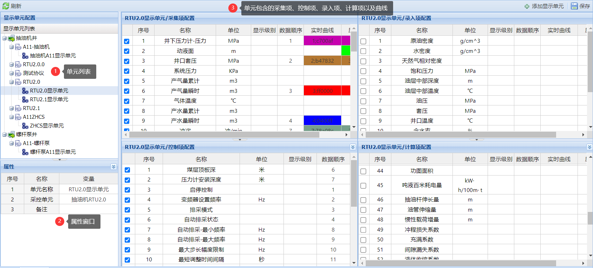
2.1.4 添加报警单元
创建报警单元，并设置单元下包含的报警项及报警配置。
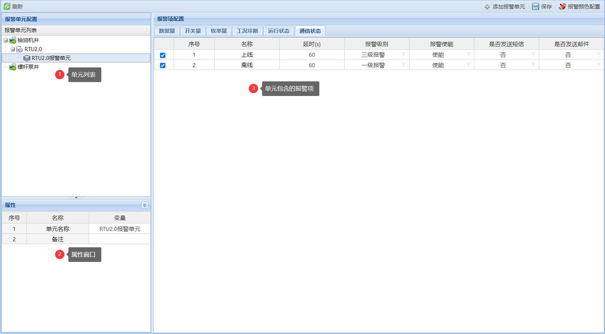
报警颜色配置
点击“报警颜色配置”按钮，对通信状态、运行状态以及各级别报警的颜色进行配置。
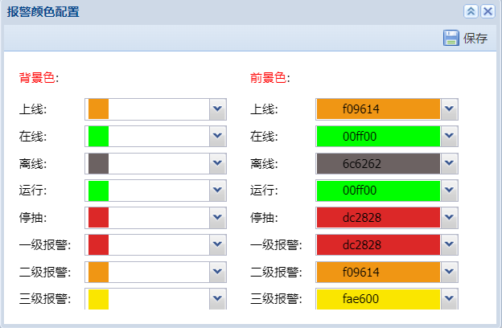
2.1.5 添加报表单元
添加报表单元并分别配置单井日报（包括班报表和日报表）、区域日报的报表模板及报表内容、曲线
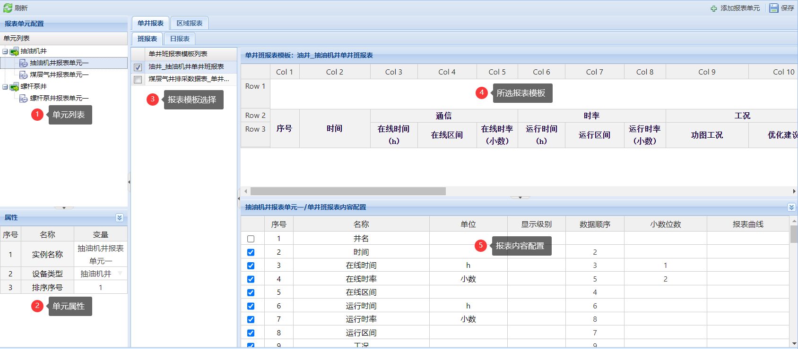
根据以上配置形成报表如下：
单井班报表：
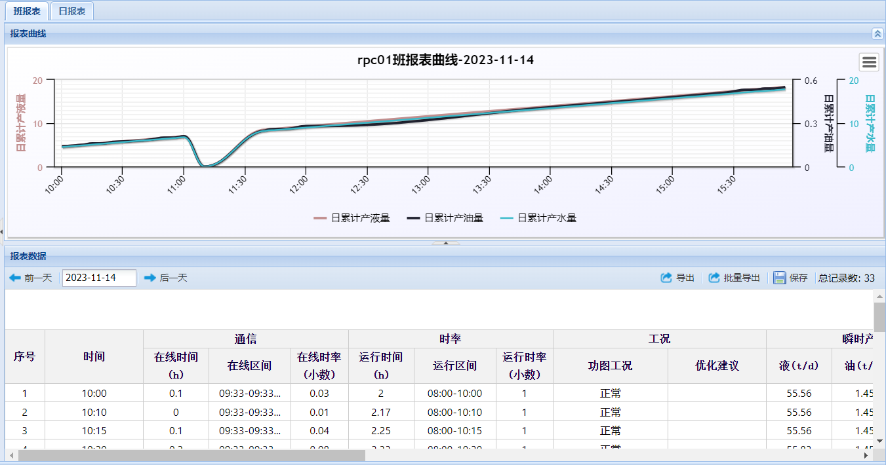
单井日报表：
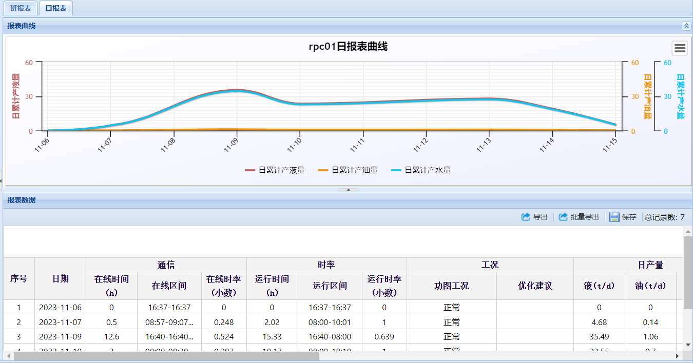
区域日报：
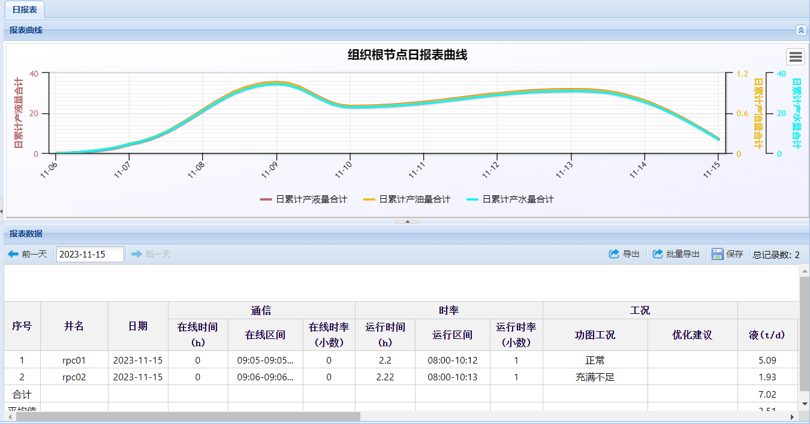
2.1.6 添加采控实例
配置完采控单元后，还需配置采控实例（读写以及解析时具体的协议），实例和设备直接关联。
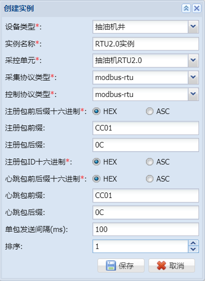
默认采控示例设置：前缀CC01，后缀0C，注册包id为十六进制
dtu可以设置为16进制例如：CC01000000010C，上位机注册包id设置为00000001即可。
2.1.7 添加显示实例
配置完显示单元后，还需配置显示实例。
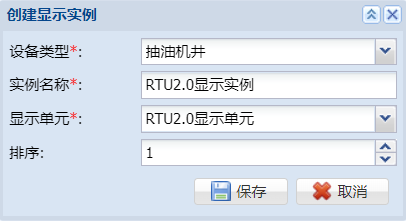
2.1.8 添加报警实例
配置完报警单元后，还需配置报警实例。
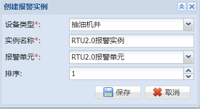
2.1.9 添加报表实例
配置完报表单元后，还需配置报表实例。
2.1.10 删除操作
在相应的列表中选中要删除的项，右键→删除
2.1.11 协议导入导出
导出：
在协议配置界面点击“导出”按钮，在弹出的窗口中，选择要导出的协议及其相关内容，点击“导出”，即可导出协议json数据。
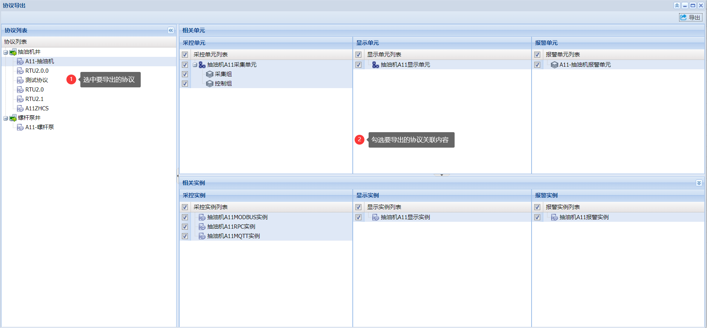
导入：
在协议配置界面点击“导入”按钮，在弹出的窗口中，选择要导入的协议及其相关内容的json文件，勾选要导入的协议相关内容，保存。
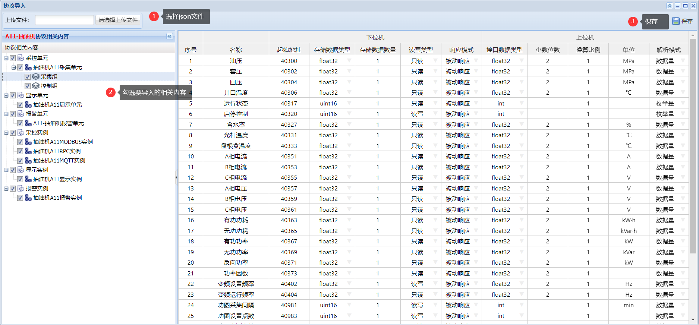
如果协议导入数据无冲突且验证无问题，直接保存成功，否则会弹出冲突和错误信息。
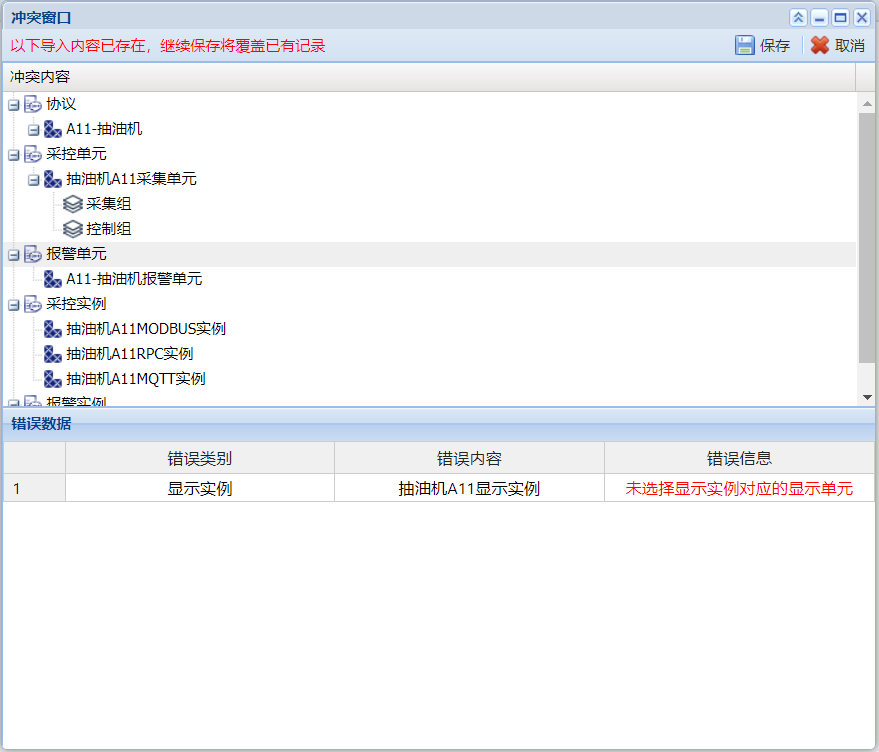
2.2 设备管理
2.2.1 井名信息
按照2.1节中添加好驱动相关的数据后，在该模块添加设备。
2.2.1.1 添加设备
点击“添加设备”按钮，将在选中的单位下添加设备，同一单位下不能添加同名设备。
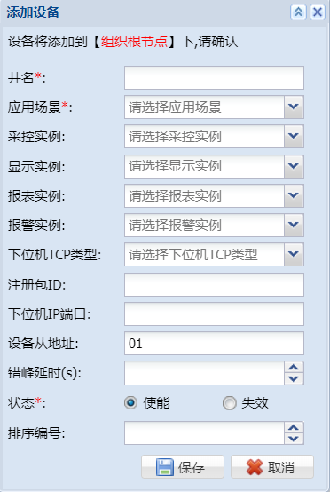
2.2.1.2 设备查看及修改
在设备列表处进行设备主要信息查看和修改：
2.2.1.3 删除设备
在设备列表中选中删除的设备，点击“删除设备”按钮，进行删除操作。
2.2.1.4 批量添加
点击“批量添加”按钮，在所选单位下进行设备批量添加。在弹出的窗口中编辑添加的设备信息（可在excel中编辑好，粘贴到表格中），点击“保存”按钮进行保存。校验无问题的数据直接保存，有问题的数据返回并显示异常数据处理窗口，在窗口中进行数据修改二次保存，或者放弃。无异常数据直接保存成功。
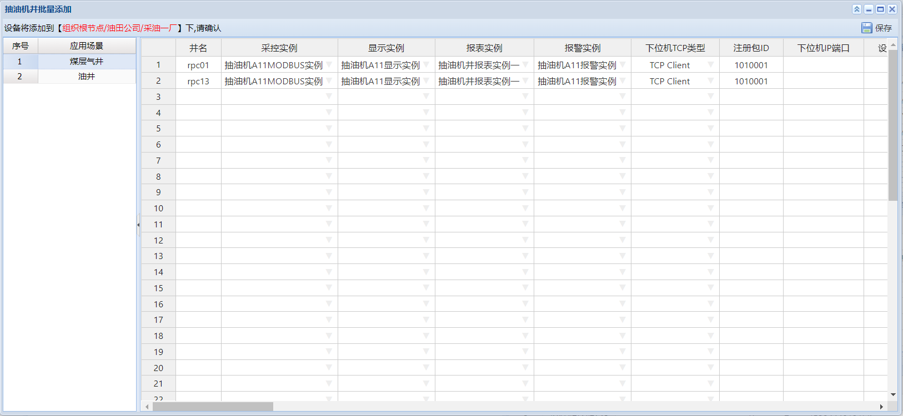
保存后，如果有校验不通过的数据，会显示异常数据处理窗口。异常数据分为冲突数据(注册包ID、设备从地址和已有设备冲突)和已有数据（同一单位下已存在同名设备）。
冲突数据修改注册包ID和设备从地址，直到无冲突时才可保存成功。
已有数据继续保存的话，覆盖同名设备的信息，不会添加设备。
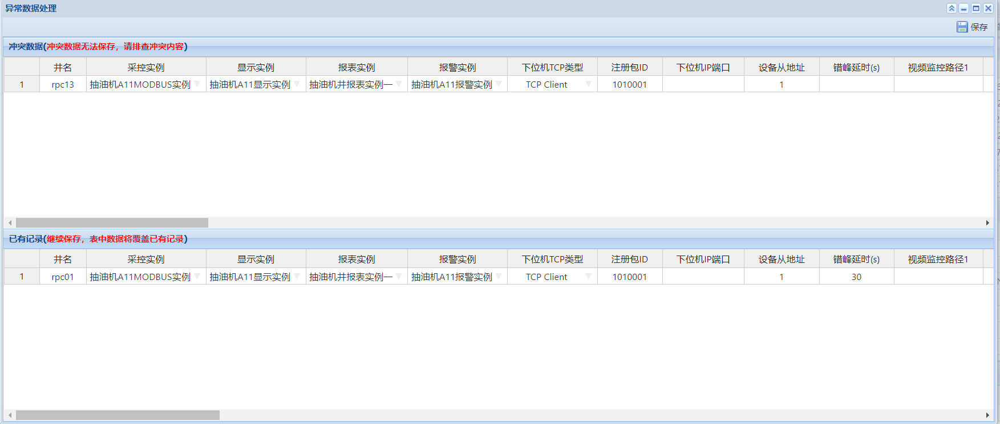
2.2.1.5 视频配置
软件支持萤石云视频接入，选中设备，录入信息监控路径和视频密钥，如果密钥下拉框中无所需信息，点击“编辑视频密钥”按钮（需视频密钥编辑权限），在弹出的窗口中，添加或者编辑密钥信息后，再配置视频密钥。每个设备可录入两个视频。
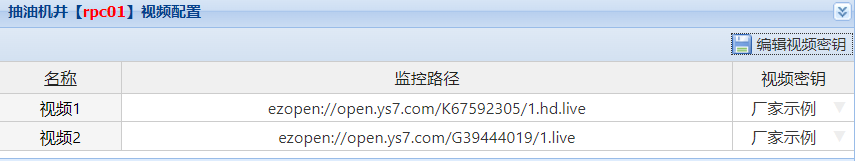
第3章 其他配置
3.1 报表配置
配置单井日报偏移小时及间隔
先停止tomcat，配置完成后再启动；
打开tomcat安装目录\webapps\ap\WEB-INF\classes\config\config.yml文件，配置报表信息
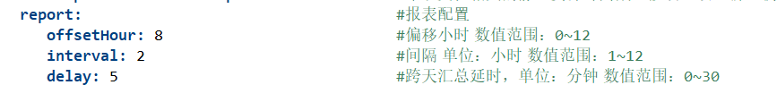
3.2 邮件发送账号配置
如需发送邮件（如报警邮件），参考本节内容配置邮件发送账号。
先停止tomcat，配置完成后再启动；
打开tomcat安装目录\webapps\ap\WEB-INF\classes\config\config.yml文件，配置邮箱信息

3.3 其他项配置
软件的一些其他配置，一般情况下不用修改.
先停止tomcat，配置完成后再启动。
打开tomcat安装目录\webapps\ap\WEB-INF\classes\config\config.yml文件，配置项见下图：
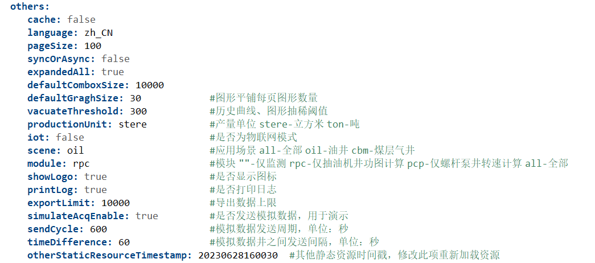
3.4 oracle常见问题
1、关闭oracle监听日志
随着系统的运行，oracle的日志文件会越来越大，当达到4G时，会影响到数据库的正常运行，可以选择关闭oracle日志文件的生成，操作方法如下。
打开命令窗口，依次执行以下命令进行关闭oracle日志操作，centOS系统下，切换oracle用户执行
su – oracle
1）lsnrctl
2）set log_status off
3）save_config
4）show log_status

2、关闭oracle审计功能
随着系统的运行，因AUD\$数据越来越大，导致SYSTEM表空间增大，当达到32G时会影响到数据库的正常运行，必须扩展SYSTEM表空间文件，可以选择关闭oracle审计功能，操作方法如下。
centOS系统下，先切换oracle用户
su – oracle
1）命令窗口执行sqlplus / as sysdba，连接数据库

2）执行“truncate table aud\$;”截断数据

3）执行“alter system set audit_trail=NONE scope=spfile;”修改spfile文件，关闭审计功能。
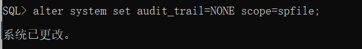
4）重启数据库：执行“shutdown immediate;”关闭oracle例程后，执行“startup”启动数据库。

3、oracle12以上版本插拔数据库自启动
每次重启数据库后，创建的插拔数据库默认不自动打开。可创建触发器，在服务启动后自动打开插拔数据库。
centOS系统下，先切换oracle用户
su – oracle
1）命令窗口执行sqlplus / as sysdba，连接数据库；
2）复制并执行以下触发器语句，注意：最后面的/不可忽略
CREATE OR REPLACE TRIGGER open_pdbs
AFTER STARTUP ON DATABASE
BEGIN
EXECUTE IMMEDIATE 'ALTER PLUGGABLE DATABASE ALL OPEN';
END open_pdbs;
/
4、表空间扩容
oracle的表空间与数据文件是成对出现的，每一个数据文件对应一个表空间，一个表空间可以包含多个数据文件。单个数据文件最大为32G，可以通过增加数据文件的方式来为表空间扩容：
alter tablespace 表空间名称 add datafile 数据文件 size 350M autoextend on next 50M Maxsize UNLIMITED;
如：
alter tablespace ap_data add datafile '/opt/oracle/oradata/ORCLCDB/ORCLPDB1/ap_data02.DBF' size 350M autoextend on next 50M Maxsize UNLIMITED;
3.5 oracle内存管理
3.5.1 oracle内存管理模式
Oracle数据库的内存管理模式从自动管理化程度由高到低依次可以分为：
自动内存管理：完全由Oracle自动管理内存分配。DBA只需设置MEMORY_TARGET（以及可选初始化参数MEMORY_MAX_TARGET），Oracle就会在SGA和PGA之间自动分配内存。
自动共享内存管理：DBA只需设置SGA_TARGET和PGA_AGGREGATE_TARGET两个初始化参数。Oracle会分别在SGA和PGA中自动分配各组件的内存。
手动内存管理：由DBA为SGA和PGA中的所有组件逐一手动分配内存。
在自动共享内存管理模式下，还可以手动为SGA中的某些重要组件指定最小的内存分配值，例如Shared Pool和Buffer Cache。
3.5.2 查看oracle内存分配
检查各内存参数的TARGET配置：
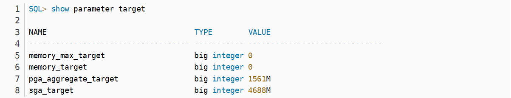
其中memory_target和memory_max_target都为0，并且sga_target和pga_aggregate_target不为0，表示当前数据库使用的是自动共享内存管理模式。
检查SGA和PGA相关参数的配置：
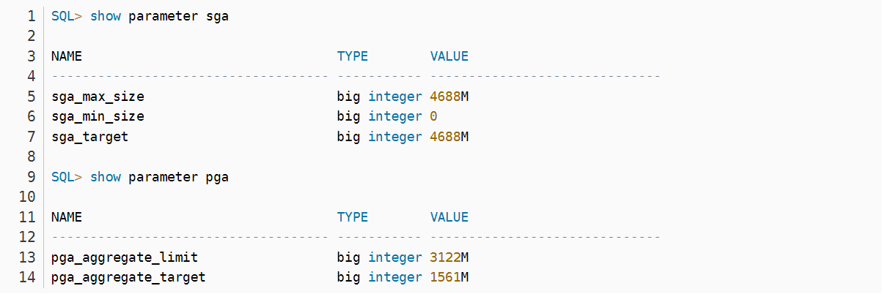
查看SGA中各组件的内存使用情况：
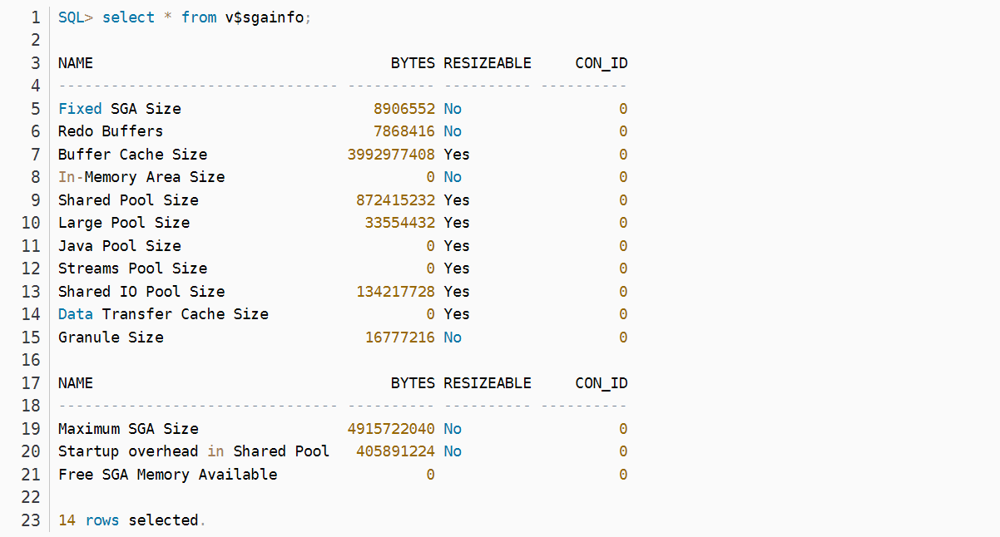
其中，Buffer Cache Size和Shared Pool Size是需要重点关注的内容。
3.5.3 修改oracle内存分配
在自动共享内存管理模式下，一般按照如下原则配置内存：
SGA_TARGET一般配置为物理内存的30%到70%之间；
PGA_AGGREGATE_TARGET一般配置为物理内存的5%到25%之间；
SGA_TARGET和PGA_AGGREGATE_TARGET之和不要超过物理内存的80%；
Buffer Cache Size一般配置为SGA_TARGET的 20% 左右；
Shared Pool Size一般配置为SGA_TARGET的 10% 左右。
修改数据库内存配置：
--禁用自动内存管理
alter system set memory_target=0M scope=spfile;
--设置SGA_TARGET
alter system set sga_max_size=4G scope=spfile;
alter system set sga_target=4G scope=spfile;
--设置Buffer cache、共享池、Java池的最小值
alter system set db_cache_size=1G scope=spfile;
alter system set shared_pool_size=512m scope=spfile;
alter system set java_pool_size=128m scope=spfile;
--设置PGA_AGGREGATE_TARGET
alter system set pga_aggregate_target=1G scope=spfile;
然后重启数据库即可生效。
3.6 数据库备份
使用exp命令备份数据库，命令如下：
exp ap/ap123#@ORCLPDB file=d:/ap.dmp full=y;
其中：
ap/ap123#@ORCLPDB 是用户名/密码@数据库名
file=d:/ap.dmp 是导出的路径
full=y 是导出全库
3.7 CentOS系统内存管理
系统cached占用太高会导致内存不足，部分进程被kill。可以通过定期手动清理缓存或者持久化配置，对内存进行优化。
3.7.1手工释放缓存
先用root用户执行sync同步一下然后再执行
1、释放页缓存:
echo 1 > /proc/sys/vm/drop_caches
2、释放slab对象:
echo 2 > /proc/sys/vm/drop_caches
3、释放slab和页缓存:
echo 3 > /proc/sys/vm/drop_caches
3.7.2持久化配置
手工释放缓存后，cached占用会很快回升，可以通过调整min_free_kbytes并持久化配置。
编辑sysctl.conf文件
vim /etc/sysctl.conf
添加：
vm.min_free_kbytes=200000
保存退出后执行：
sysctl –p
使配置立即生效